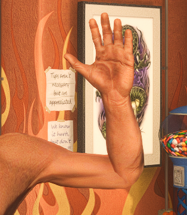

Votre navigateur ne supporte pas la lecture vidéo.
Santa Maria Ink
Choisissez votre catégorie de tatouage
Tête
Voir les tatouages
Torse
Voir les tatouages
Jambe Gauche
Voir les tatouages
Jambe Droite
Voir les tatouages

Bras Gauche
Voir les tatouages
Bras Droit
Voir les tatouages